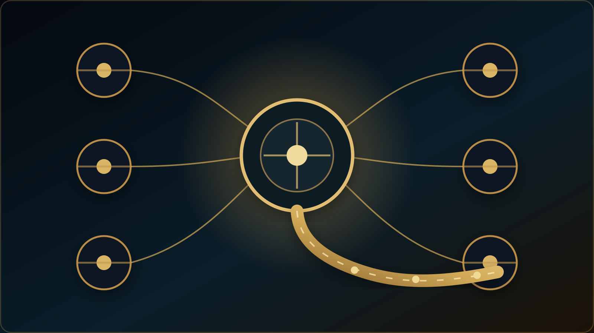

مشاوره تحصیلی
وقتی مسئله فقط یک آزمون یا یک انتخاب نیست و مسیر کلی دانشآموز باید بررسی شود.
مشاوره تحصیلیخدمات آموزشی، پژوهشی و مشاوره
مسئله یک دانشآموز، نیاز یک پژوهشگر، پرسش یک معلم و پروژه یک مؤسسه ماهیت یکسانی ندارند. این بخش عمداً مسیرها را از یکدیگر جدا میکند تا نوع شواهد، سطح مداخله حرفهای، ملاحظات حریم خصوصی و شکل همکاری با نیاز واقعی هماهنگ باشد.

چهار مسیر اصلی مخاطبان
مسیر مناسب
وقتی مسئله فقط یک آزمون یا یک انتخاب نیست و مسیر کلی دانشآموز باید بررسی شود.
مشاوره تحصیلیبرای تبدیل رتبه، علایق، شواهد و واقعیت گزینهها به یک اولویتبندی دفاعپذیر.
انتخاب رشتهبرای بررسی چندمنبعی ظرفیتهای رشد، شواهد عملکرد و زمینه.
استعدادیابیبرای برنامهریزی، تصمیمهای دوره آزمون و اتصال نتیجه به مرحله بعدی.
مشاوره کنکوربرای RCAS، شواهد چندمنبعی، D1–D6، Golden Path و BAHAR.
Golden Talentاین بخش حوزه تخصصی، آموزشی و دانشی سایت است و در فهرست خدمات پولی جاری قرار ندارد.
مطالعه حوزه تخصصیمنطق تعرفه خدمات تخصصی
این خدمات بر اساس تحلیل مسئله، بررسی شواهد موجود، قضاوت حرفهای و تعیین مسیر اقدام طراحی شدهاند. تعرفه بالاتر صرفاً به معنای طولانیتر بودن جلسه نیست؛ دامنه پرونده، پیچیدگی تحلیل و نوع خروجی در تعیین خدمت مناسب نقش دارند. خدمات بدون تضمین قبولی دانشگاه، انتشار مقاله یا نتیجه آزمون ارائه میشوند.
آشنایی با سوابق علمی و حرفهای · سیاست مشاوره · پرسش پیش از رزرو
Signature Advisory
برای پروندههایی که نیازمند بررسی چندمرحلهای، خروجی مکتوب و دامنه تعهد مشخص هستند، شش بسته اختصاصی معرفی شده است. جزئیات هر بسته، تصویر، تعرفه پیشنهادی، شرایط و محدودیتهای آن در صفحه اختصاصی آمده است. پرداخت این بستهها فعلاً غیرفعال است.
تعرفه رسمی خدمات
تعرفههای این بخش مستقیماً از کاتالوگ مرکزی خدمات خوانده میشوند تا قیمت در چند صفحه بهصورت جداگانه نگهداری نشود. اکنون ۲۱ خدمت قیمتگذاریشده در کاتالوگ فعال وجود دارد. برای هر خدمت، دامنه دقیق، مدارک لازم، خروجی مورد انتظار و مرز حرفهای پیش از رزرو نهایی مشخص میشود.
وضعیت سفارش: این تعرفهها معرفی خدماتاند؛ دکمه «درخواست بررسی این خدمت» تنها پیشنویس ایمیل میسازد و نه رزرو یا پرداخت قطعی. رزرو و پرداخت آنلاین در این مرحله فعال نیستند. پیش از هر تعهد، دامنه و شیوه ارائه خدمت باید تأیید شود.
در حال بارگذاری فهرست خدمات...
خدمتی با این عبارت یافت نشد؛ عبارت کوتاهتر یا موضوع دیگری را امتحان کنید.
تا سه خدمت را از کارتهای زیر انتخاب کنید تا تعرفه، زمان، مخاطب، خروجی و محدودیتهای آنها کنار هم نمایش داده شوند. این مقایسه بهمعنای درخواست، رزرو یا خرید نیست.
آموزش زبان انگلیسی در این تعرفهها محصول پولی مستقل نیست و بهعنوان حوزه تخصصی/آموزشی سایت باقی میماند.
شفافیت پیش از سفارش · نمونه صرفاً آموزشی
برای آنکه تفاوت «بازبینی تشخیصی» با ویرایش صرفاً زبانی روشن باشد، یک وضعیت کاملاً فرضی را در نظر بگیریم: نویسنده مقالهای درباره رابطه بازخورد نوشتاری و عملکرد زبانآموزان تهیه کرده و از دادههای مشاهدهای، نتیجهای با بیان علت و معلولی گرفته است. این سناریو یک نمونه آموزشی است؛ به هیچ پرونده یا مشتری واقعی تعلق ندارد و نباید بهعنوان نمونهکار انجامشده تفسیر شود.
مسئله فرضی: متن ادعا میکند بازخورد «باعث بهبود» شده است؛ درحالیکه طراحی گزارششده فقط یک رابطه را نشان میدهد و شواهد کافی برای نسبتدادن علت فراهم نمیکند.
اثر بر مقاله: بخش بحث و نتیجهگیری ممکن است از ظرفیت روش پژوهش فراتر رود.
اولویت بالا: ادعای علّی با دامنه معتبر یافتهها هماهنگ شود. تعریف متغیرها، شیوه نمونهگیری و محدودیتهای استنباط نیز در بخش روش و بحث روشنتر شوند.
اولویت بعدی: انسجام پاراگرافها، اصطلاحات تخصصی و زبان دانشگاهی بازبینی شود.
خروجی مورد انتظار خدمت: گزارش تشخیصی با اولویتبندی مسائل اصلی و پیشنهاد مسیر بازنگری؛ نویسنده میفهمد کدام مشکل ابتدا به تصمیم علمی نیاز دارد و کدامیک به ویرایش نگارشی مربوط است.
مرز حرفهای: بازبینی، تولید داده، نویسندگی جایگزین یا تضمین پذیرش مقاله نیست.
محتوا، عمق و شکل گزارش واقعی به متن دریافتی و دامنه توافقشده بستگی دارد؛ این مثال تعداد صفحات، زمان تحویل یا نتیجه تضمینشدهای را وعده نمیدهد. پیش از ثبت نهایی درخواست، دامنه کار روشن میشود.
خدمات پژوهشگران و دانشگاهیان · اولویت فعلی
این مسیر برای واگذاری نویسندگی یا تولید صوری پژوهش طراحی نشده است. هدف، کمک حرفهای به پژوهشگری است که مسئله، مقاله یا موقعیت علمی مشخصی دارد و میخواهد کیفیت استدلال، ارائه، تصمیم انتشار یا پاسخ حرفهای خود را بهبود دهد.
بازبینی زبان، وضوح و بیان علمی در نسبت با استدلال و هدف متن، نه صرفاً اصلاح جملههای منفرد.
مناسب برای مقالهای که از نظر علمی شکل گرفته اما به پالایش زبانی و ارائه حرفهای نیاز دارد.بررسی ساختار استدلال، انسجام، جایگاه پژوهش، گزارش روش و آمادگی برای ارسال، با تعیین اولویت اصلاحات.
مناسب برای مقالهای که هنوز نقاط ضعف اصلی آن برای نویسنده روشن نیست.گفتوگوی متمرکز درباره پرسش پژوهش، منطق طراحی، شواهد، تفسیر یافتهها یا ارتباط مطالعه با ادبیات.
مناسب برای یک مسئله پژوهشی مشخص؛ نه جایگزینی پژوهشگر با مشاور.بررسی تناسب مجله، راهبرد ارسال، انتظارات تحریریه و نحوه مواجهه با تصمیم سردبیر یا داوران.
مناسب برای مراحل پیش از ارسال، بازنگری یا ارسال مجدد.تحلیل نظرهای داور، تفکیک اصلاح ضروری از اختلاف علمی و طراحی پاسخ حرفهای و مستدل.
مسئولیت نهایی تصمیم علمی و پاسخ همچنان با نویسنده باقی میماند.بازبینی شواهد حرفهای، معماری رزومه، راهبرد درخواست و تمرین مصاحبه علمی متناسب با یک فرصت واقعی.
مناسب برای پژوهشگر یا مدرسی که برای موقعیت مشخص دانشگاهی یا حرفهای آماده میشود.مرز خدمت
بخش مهمی از سایت به توضیح عمومی، راهنماها و روششناسی اختصاص دارد. خدمت خصوصی زمانی معنا پیدا میکند که مسئله به شواهد فردی، تحلیل حرفهای، پرونده خصوصی، جلسه یا پیگیری نیاز داشته باشد.
مسیر استاندارد خدمت حرفهای
ورود به بخش خصوصی
پاسخ آزمون، کارنامه، پرونده دانشآموز، پیام خصوصی، نوبت و پرداخت در صفحات عمومی سایت ذخیره نمیشوند. اطلاعات حساس فقط از مسیرهای امن و خصوصی دریافت و نگهداری میشوند.